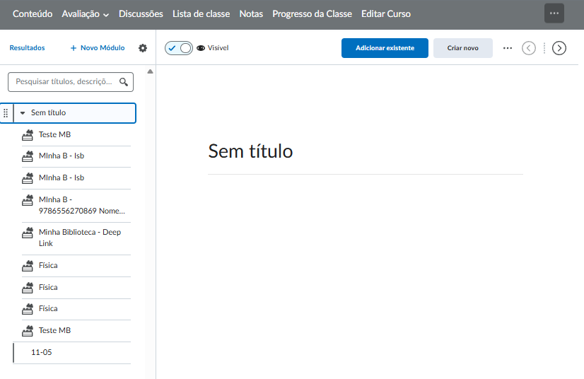
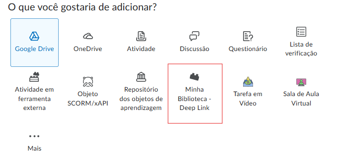
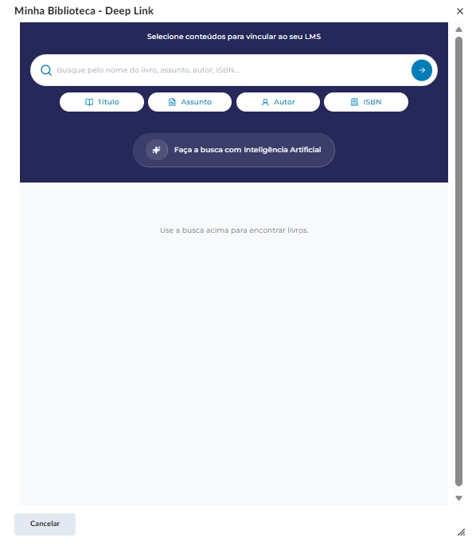
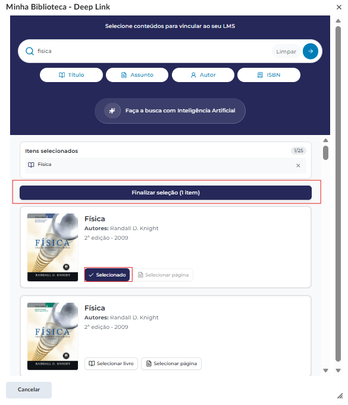
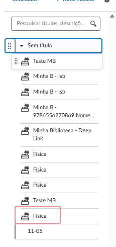
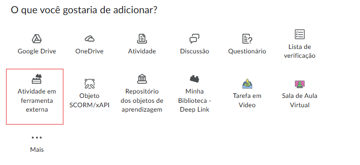
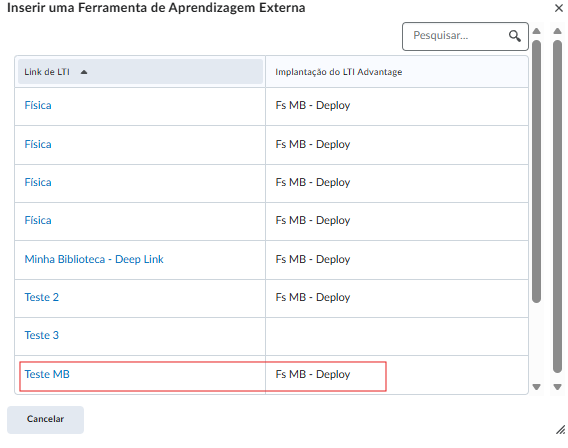
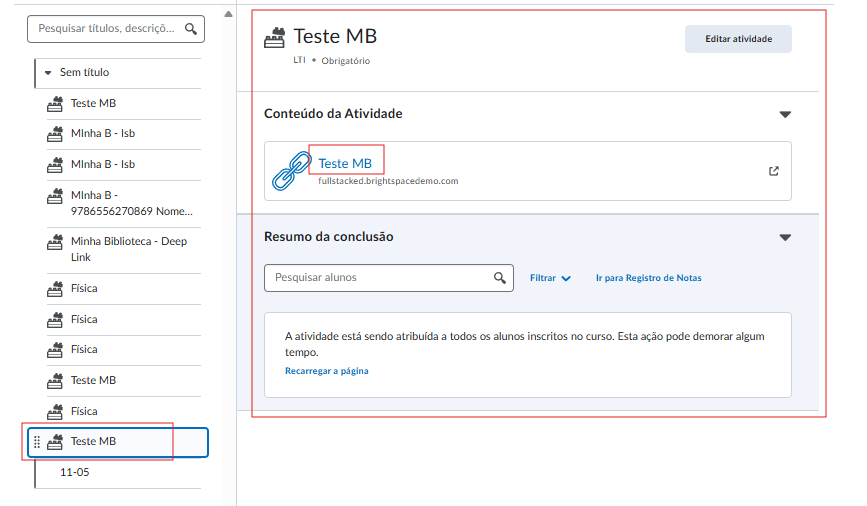

Minha Biblioteca
no seu curso
Como verificar a integração, disponibilizar acesso e adicionar livros diretamente no conteúdo da sua disciplina.
1. Verificar a configuração na disciplina
Antes de usar, confirme se a MB está disponível no seu curso
A Minha Biblioteca é registrada no Brightspace pelo administrador da instituição. Uma vez que a ferramenta e seu Deployment estiverem ativos, ela ficará disponível para você adicionar no conteúdo da disciplina.
Como verificar se a MB está disponível
Tente adicionar a Minha Biblioteca ao conteúdo do curso (veja a Seção 3). Se ela aparecer na lista de ferramentas ao clicar em Adicionar existente, está tudo pronto. Caso não apareça, entre em contato com o administrador do Brightspace da instituição.
2. Formas de adicionar a Minha Biblioteca
Conheça as duas opções disponíveis no Adicionar existente
Dentro de um módulo do conteúdo, ao clicar em Adicionar existente, o Brightspace oferece duas formas de inserir a Minha Biblioteca. Você pode usar uma ou as duas ao mesmo tempo:
Deep Link
Uma tela de seleção da MB abre automaticamente. Você escolhe os livros ou páginas específicos — cada seleção vira um item independente no módulo.
Recomendado para leituras dirigidasAtividade em Ferramenta Externa
Você seleciona o item pré-configurado pelo admin (ex.: Minha Biblioteca — Catálogo). O aluno acessa a home da MB para busca livre no acervo.
| Característica | Deep Link (A) | Ferramenta Externa (B) |
|---|---|---|
| O que o aluno vê ao clicar | O livro ou página exata selecionada | Home da MB — busca livre no acervo |
| Itens criados no módulo | Um por livro/página selecionado | Um único item (link ao catálogo) |
| Ideal para | Leituras obrigatórias por semana/tema | Acesso geral ao acervo |
3. Adicionar via Conteúdo
Passo a passo completo — passos comuns e as duas opções
O processo começa da mesma forma independentemente da opção escolhida: acesse o conteúdo, selecione ou crie o módulo e clique em Adicionar existente. A partir daí, escolha o caminho conforme sua necessidade.
Passos comuns (A e B)
Acesse o Conteúdo da disciplina e selecione o módulo
No menu superior da disciplina, clique em Conteúdo. Localize o módulo onde deseja inserir o link — ou crie um novo módulo, se necessário.

Clique em "Adicionar existente"
Dentro do módulo, clique em Adicionar existente. Um menu de opções aparecerá — é aqui que os caminhos se dividem.
No menu, selecione Deep Link. A tela de seleção da Minha Biblioteca abrirá automaticamente dentro do Brightspace.

-
A tela de seleção da MB abre. Use a busca para encontrar os livros ou materiais desejados.

-
Selecione os itens desejados e confirme a seleção.

-
Você será redirecionado para a disciplina. Cada item selecionado aparece como um link independente no módulo.

No menu, selecione Atividade em Ferramenta Externa. Uma lista dos itens disponíveis aparecerá.

-
Na lista de ferramentas, localize e selecione o item criado pelo admin — geralmente nomeado como Minha Biblioteca ou Minha Biblioteca — Catálogo.

-
Você será redirecionado para a disciplina. O item aparece no módulo como um único link ao catálogo da MB.

Ao final, seus alunos verão os links dentro do módulo. Ao clicar, são redirecionados diretamente para aquela leitura na Minha Biblioteca — com autenticação automática, sem precisar fazer login separado.
Resultado para o aluno em cada cenário
| Como o professor configurou | O que o aluno vê ao clicar |
|---|---|
| Deep Link — livro selecionado | O livro escolhido, aberto desde o início |
| Deep Link — página específica | Aquela página exata do livro, pronta para leitura |
| Atividade em Ferramenta Externa | Home da Minha Biblioteca — busca livre no acervo |
Dúvidas frequentes
Situações comuns e como resolver
A Minha Biblioteca não aparece nas opções de Adicionar existente
O Deployment da ferramenta precisa incluir o seu curso no escopo. Entre em contato com o administrador do Brightspace para verificar se o Deployment e o Link foram criados e configurados corretamente.
A opção "Deep Link" não aparece no menu
O Deep Linking depende de como o Link foi configurado pelo administrador. Se a opção não aparecer, solicite ao suporte técnico da instituição que verifique se as extensões de Deep Linking estão habilitadas no Deployment da ferramenta.
O aluno clicou e deu erro de acesso
Verifique se o aluno está cadastrado no Brightspace com e-mail completo e válido e com nome e sobrenome preenchidos. Dados incompletos no cadastro do LMS causam falha de autenticação na MB.
O aluno não tem acesso ao livro indicado
O acesso ao conteúdo depende do contrato da instituição com a Minha Biblioteca. Entre em contato com o suporte da MB para verificar o acervo contratado.
Posso reutilizar os mesmos itens em semestres futuros?
Sim. Os itens adicionados ficam salvos no conteúdo do curso. Ao copiar ou replicar a disciplina no Brightspace, esses links são mantidos e continuam funcionando normalmente.
Precisa de ajuda?
Para dúvidas técnicas sobre a integração, entre em contato com o suporte da sua instituição ou da Minha Biblioteca.
Para dúvidas sobre o acervo ou acesso a livros, acesse o suporte em minhabiblioteca.com.br.